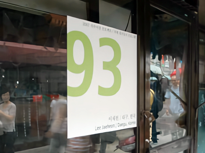

Lee Jaeheon
이재헌
Daegu, Korea 대구, 한국

작업실 NO. 93
이재헌 Lee Jae Heon
학력
경북대학교 공과대학 기계공학과 졸업
서울대학교 미술대학 서양화과 졸업
서울대학교 미술대학 대학원 서양화 전공 재학
전시경력
단체전
2005 <Out Door>전, 미술사, 대구
2006 <오늘날 예술은 일상 속에서 다만 개념적으로 짠하다.> 스톤앤워터, 안양
2006 <우리, 차이 나?>(대학미술협의회 기획전) 동덕아트갤러리, 서울
2007 <우수청년작가전> 갤러리 가이아, 서울
2007 <우문현답>(쿤스트독공모작가전) 쿤스트독, 서울
2007 <얼굴얼굴전> 리앤박 갤러리, 파주 헤이리
기타
2006년 SOMA Drawing Center, 아카이브 작가 선정 (소마미술관, 서울)
2007년 석수시작 프로젝트-석수시장 국제레지던시 프로그램(2007.6.10-2007.8.30) 참여( 안양)
연락처
이메일: iblisgod@hanmail.net
Lee jae heon
Email: iblisgod@hanmail.net
EDUCATION
2007, M.F.A. Currently Majoring in Course of Painting Dept., Graduate School, Seoul National University, Seoul, Korea.
2006, B.F.A,, Painting Dept., College of Fine Arts, Seoul National University, Seoul, Korea.
2003, B.S. in Mechanical Engineering, Kyungpook National University, Daegu, Korea.
EXHIBITION
Group Exhibition
2005, <Out Door>, Misulsa, Daegu, Korea
2006, <How touching is art for the sake of being Art !?>, Stone&Water, Anyang, Korea
2006, <Are we, different?>, Dongduk Art Gallery, Seoul, Korea
2007, <Young Artist>, Gallery Gaia, Seoul, Korea
2007, <Woo-Moon-Hyun-dab: is a wise answer to silly question>, Kunstdoc, Seoul, Korea
2007, <Face-Face>, Lee&Park Gallery, Heyri, Seoul
Award & Residency
2006 SOMA Drawing Center archiving Artist
2007 Seok-Su Market International Residency Program (2007.6.10-2007.8.30)
AFI 2007 Seok-su Market Project
International Artists Residency
Open studio:
Wed. 8/22 - Sun. 8/26 1-7PM 2007
Seok-su 2-dong 286-15 / Man-an-gu /Anyang-si, Gyeonggido / KOREA